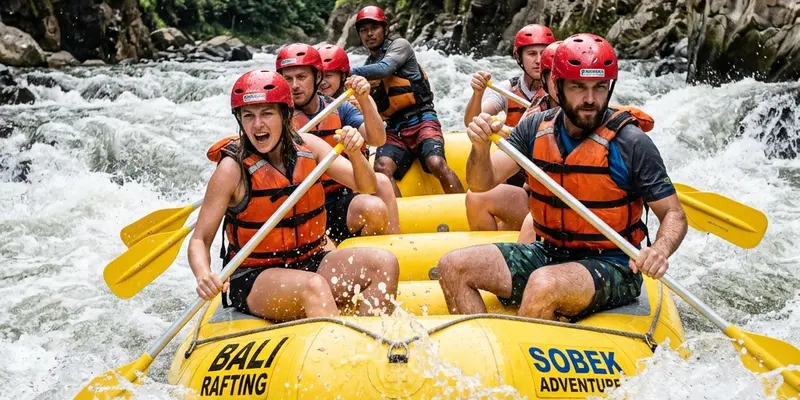

Rafting Kaliwatu adalah aktivitas arung jeram di Sungai Brantas kawasan Bumiaji, Kota Batu, yang menawarkan rute sepanjang sekitar tujuh kilometer dengan arus deras dan banyak bebatuan sebagai tantangan utamanya.
Ringkasan Inti
- Rafting Kaliwatu berlokasi di Desa Pandanrejo, Kecamatan Bumiaji, Kota Batu, di sepanjang aliran Sungai Brantas.
- Rute pengarungan berjarak sekitar tujuh kilometer dengan durasi sekitar 30 menit hingga satu jam.
- Arus sungai yang deras dan banyak bebatuan membuat rafting Kaliwatu tergolong menantang bagi sebagian peserta.
- Lokasi ini buka setiap hari mulai pukul 08.00 hingga 17.00 WIB.
- Memilih vendor outbound yang berpengalaman membantu memastikan keamanan dan kenyamanan selama rafting.
Apa Itu Rafting Kaliwatu dan Di Mana Lokasinya?
Rafting Kaliwatu adalah aktivitas arung jeram yang diselenggarakan di sepanjang aliran Sungai Brantas, tepatnya di kawasan Desa Pandanrejo, Kecamatan Bumiaji, Kota Batu, Jawa Timur. Lokasi ini dikenal sebagai salah satu destinasi rafting sekaligus pusat kegiatan outbound yang cukup populer di kawasan Malang Raya.
Rafting adalah aktivitas mengarungi sungai menggunakan perahu karet bersama tim dan dipandu oleh instruktur berpengalaman, di mana peserta akan menghadapi berbagai rintangan alami seperti arus deras, jeram, dan bebatuan di sepanjang jalur sungai yang dilalui.
Untuk Siapa Rafting Kaliwatu Cocok Dilakukan?
Rafting Kaliwatu cocok dilakukan oleh individu, keluarga, maupun rombongan korporat yang ingin merasakan sensasi arung jeram sekaligus aktivitas outbound yang mempererat kebersamaan tim. Kegiatan ini juga sering dimanfaatkan sebagai bagian dari program team building perusahaan.
Bagi peserta pemula, rafting Kaliwatu tetap dapat diikuti dengan pendampingan pemandu berpengalaman dan perlengkapan keselamatan standar, meski kondisi arus yang cukup deras membuat lokasi ini lebih direkomendasikan bagi peserta yang dalam kondisi fisik sehat dan siap menghadapi tantangan fisik ringan hingga menengah.
Bagaimana Rute dan Tingkat Kesulitan Rafting Kaliwatu?
Rute rafting Kaliwatu menempuh jarak sekitar tujuh kilometer di sepanjang Sungai Brantas dengan durasi pengarungan sekitar 30 menit hingga satu jam, tergantung kondisi debit air pada saat kegiatan berlangsung.
Tingkat kesulitan rafting Kaliwatu tergolong menantang karena arus sungai yang relatif deras serta banyaknya bebatuan besar di sepanjang jalur, sehingga peserta akan merasakan sensasi arung jeram yang cukup memacu adrenalin. Di tengah perjalanan, biasanya tersedia titik jeda pada segmen sungai yang lebih tenang, di mana peserta dapat berenang sejenak atau beristirahat sebelum melanjutkan pengarungan hingga titik akhir.

Kerja sama tim peserta saat mengarungi jeram deras dalam aktivitas rafting Kaliwatu Kota Batu.
Kapan Waktu Terbaik Melakukan Rafting Kaliwatu?
Waktu terbaik melakukan rafting Kaliwatu umumnya berada pada pagi hingga siang hari, mengingat lokasi ini beroperasi setiap hari mulai pukul 08.00 hingga 17.00 WIB dan kondisi cuaca pagi hari cenderung lebih cerah dibanding menjelang sore.
Musim kemarau juga sering dianggap sebagai periode yang lebih nyaman untuk rafting, karena debit air cenderung lebih stabil dibanding musim hujan yang berpotensi membuat arus sungai menjadi lebih deras dan kurang terprediksi bagi peserta pemula.
Mengapa Rafting Kaliwatu Menjadi Pilihan Populer untuk Outbound?
Rafting Kaliwatu menjadi pilihan populer untuk kegiatan outbound karena menawarkan tantangan fisik yang mendorong kerja sama tim, dipadukan dengan panorama alam khas Kota Batu yang menyejukkan sepanjang jalur pengarungan.
Selain aktivitas rafting utama, kawasan ini umumnya juga menyediakan fasilitas tambahan seperti area istirahat dan kafe dengan pemandangan alam, sehingga peserta dapat menikmati suasana setelah menyelesaikan sesi rafting bersama tim atau keluarga.
Apa Manfaat Mengikuti Rafting Kaliwatu bagi Tim maupun Keluarga?
Manfaat mengikuti rafting Kaliwatu bagi tim maupun keluarga meliputi peningkatan kerja sama, pengalaman menghadapi tantangan bersama, serta momen kebersamaan yang jarang didapatkan dalam aktivitas sehari-hari di lingkungan kerja atau rumah.
Manfaat lain yang umum dirasakan peserta:
- Melatih komunikasi dan koordinasi tim saat menghadapi arus sungai yang menantang.
- Memberikan pengalaman baru yang menyegarkan di luar rutinitas kerja atau sekolah.
- Menikmati panorama alam Kota Batu yang jarang terlihat dari jalur wisata biasa.
- Menjadi sarana relaksasi sekaligus olahraga fisik ringan hingga menengah.
Bagaimana Cara Mempersiapkan Diri Sebelum Rafting Kaliwatu?
Cara mempersiapkan diri sebelum rafting Kaliwatu meliputi memastikan kondisi fisik dalam keadaan sehat, memakai pakaian yang nyaman dan cepat kering, serta mengikuti pengarahan keselamatan dari pemandu sebelum memulai pengarungan.
Peserta juga disarankan membawa pakaian ganti dan alas kaki yang sesuai untuk medan basah, mengingat aktivitas rafting akan membuat seluruh tubuh basah sepanjang perjalanan menyusuri Sungai Brantas hingga titik akhir pengarungan.
Apa Faktor yang Perlu Diperhatikan Sebelum Memilih Vendor Outbound untuk Rafting?
Faktor yang perlu diperhatikan sebelum memilih vendor outbound untuk rafting meliputi pengalaman vendor dalam menangani rombongan, kelengkapan alat keselamatan yang disediakan, serta kejelasan paket harga yang ditawarkan sebelum kegiatan berlangsung.
Beberapa penyelenggara outbound seperti Gemilang Katon Outbound umumnya menawarkan paket rafting Kaliwatu yang sudah mencakup pemandu, perlengkapan keselamatan, dan dokumentasi kegiatan, sehingga peserta disarankan menanyakan secara rinci cakupan layanan tersebut sebelum memutuskan menggunakan jasa vendor tertentu.
Apa Kesalahan Umum yang Perlu Dihindari Saat Rafting Kaliwatu?
Kesalahan umum yang perlu dihindari saat rafting Kaliwatu adalah tidak mengikuti pengarahan keselamatan dengan seksama, sehingga peserta berisiko tidak memahami prosedur darurat apabila terjadi kondisi tak terduga di tengah pengarungan.
Kesalahan lain yang juga sering ditemui:
- Tidak memakai pelampung atau helm keselamatan dengan benar sesuai arahan pemandu.
- Membawa barang berharga yang berisiko rusak atau hilang selama aktivitas rafting.
- Memaksakan diri mengikuti rafting meski kondisi kesehatan sedang kurang fit.
Bagaimana Perbandingan Rafting Kaliwatu dengan Lokasi Rafting Lain di Sekitar Malang?
Dibandingkan lokasi rafting lain di sekitar Malang, rafting Kaliwatu dikenal dengan karakteristik arus yang cukup deras dan banyak bebatuan, sementara sebagian lokasi rafting lain menawarkan jalur yang lebih tenang dan cocok untuk pemula yang baru pertama kali mencoba arung jeram.
Perbedaan karakteristik ini membuat pemilihan lokasi rafting sebaiknya disesuaikan dengan pengalaman dan kondisi fisik peserta, di mana rafting Kaliwatu lebih relevan bagi peserta yang menginginkan tantangan lebih tinggi dibanding jalur rafting yang lebih ringan di lokasi lain.
Kesimpulan
Rafting Kaliwatu menawarkan pengalaman arung jeram yang menantang di Sungai Brantas dengan rute sekitar tujuh kilometer dan tingkat kesulitan yang cukup memacu adrenalin. Persiapan fisik yang matang, mengikuti pengarahan keselamatan, serta memilih vendor outbound yang berpengalaman akan membantu memastikan kegiatan ini berjalan aman dan menyenangkan. Untuk pembahasan lebih rinci, silakan simak penjelasan mengenai rute dan tingkat kesulitan rafting Kaliwatu secara lebih mendalam, panduan menentukan waktu terbaik berkunjung, serta tips memilih vendor outbound yang tepat pada artikel-artikel pendukung berikut.
Pertanyaan yang Sering Diajukan
Rafting Kaliwatu adalah aktivitas arung jeram di sepanjang Sungai Brantas kawasan Bumiaji, Kota Batu, yang dikenal dengan arus deras dan banyak bebatuan.
Rafting adalah aktivitas mengarungi sungai menggunakan perahu karet bersama tim yang dipandu instruktur, menghadapi rintangan alami seperti arus dan jeram di sepanjang sungai.
Rute rafting Kaliwatu berjarak sekitar tujuh kilometer dengan durasi pengarungan sekitar 30 menit hingga satu jam.
Rafting Kaliwatu tetap dapat diikuti pemula dengan pendampingan pemandu berpengalaman, meski tingkat kesulitannya tergolong menantang karena arus yang deras.
Rafting Kaliwatu buka setiap hari mulai pukul 08.00 hingga 17.00 WIB.